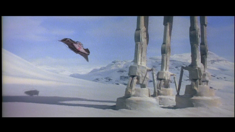

It is a dark time for the
Rebellion. Although the Death
Star has been destroyed,
Imperial troops have driven the
Rebel forces from their hidden
base and pursued them across
the galaxy.
Evading the dreaded Imperial
Starfleet, a group of freedom
fighters led by Luke Skywalker
has established a new secret
base on the remote ice world
of Hoth.
The evil lord Darth Vader,
obsessed with finding young
Skywalker, has dispatched
thousands of remote probes into
the far reaches of space....
Timeline
1997 | Special Edition release
Though much of the original matte painting was retained in the new shot, the main apartment building has been changed.
2004 | Special Edition DVD release
Text.
2004 | Special Edition DVD release
Almost all of the composites against the white snowy background were redone to better preserve the color quality of the model and its blurred edges.

The edge of the matte painting originally had heavy black seams surrounding the viewport that Darth Vader stands at; the redone composite cleans up these edges.
In the original shot, Luke was translucent (note the speeder visible through his helmet). The other speeders also had heavy matte lines.

More snowspeeder opacity and edge-fixing thanks to digital compositing. The tow-rope has been thickened, and the speeder's shadow redone to better match the color and contour of the land.
The Rebel transport is better matched to its surrounding, and its hand-drawn shadow is redone to better match the lighting of the scene.
Garbage matte artifacting around all the ships has been cleaned up.

The original Emperor has been replaced by Ian McDiarmid in makeup for the 2004 DVD release. Also, the seam between the matte painting and live action set has been softened.
The background skyline has been changed, though the foreground platform and Falcon elements are reused from the original. What was once hand-drawn retro rockets have been replaced with composited steam elements.
The original establishing shot of Cloud City had a cloud car fly towards camera. In the new version, introduced in 1997, the car is gone, but now the camera moves in towards the city, while a refinery platform floats nearby.
Text.
The original architecture did not portray a penthouse apartment, so the view out the windows had visible spokes, as opposed to open sky with a cloud car.
The outer wall has been turned into a window looking at the Slave I.
2011 | Special Edition Blu-ray release

Text.
Text.
A reflection has been added to the main apartment's window.